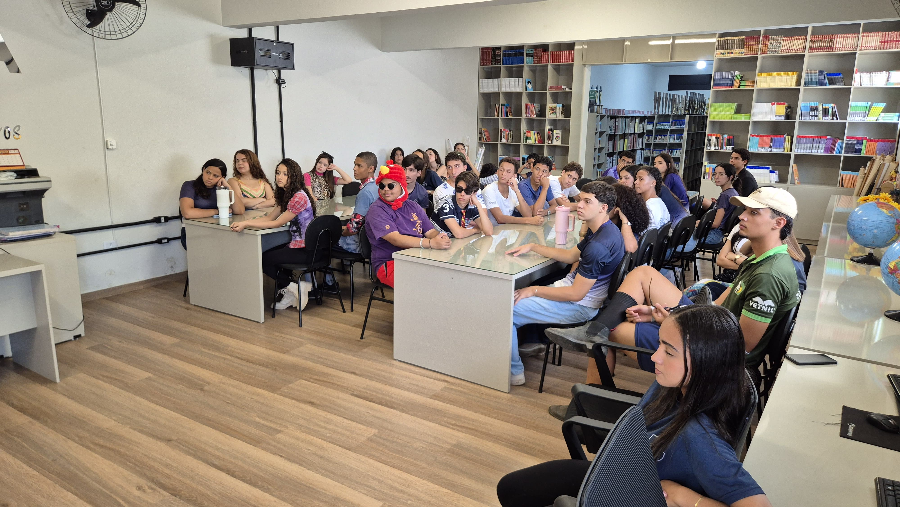
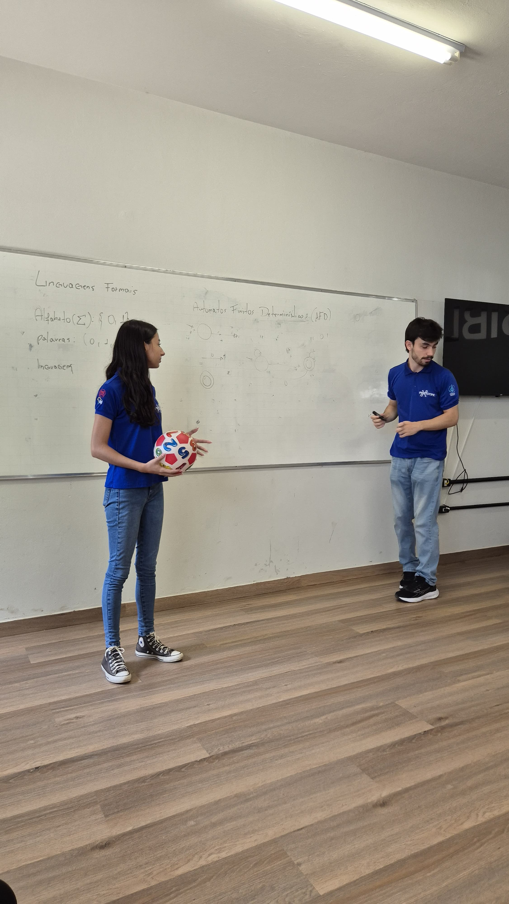
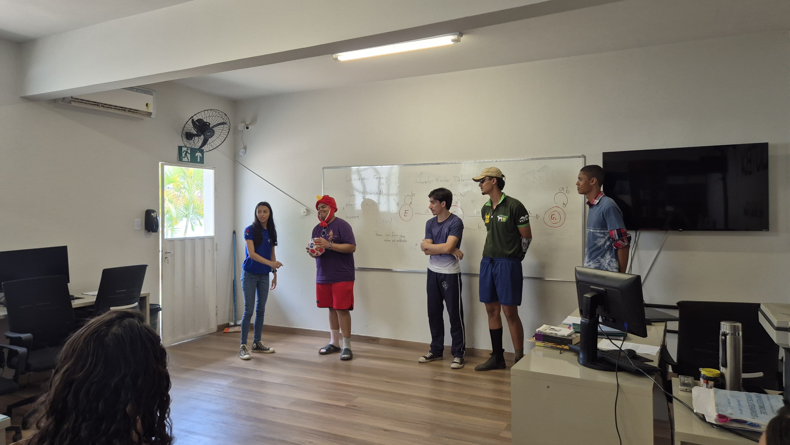
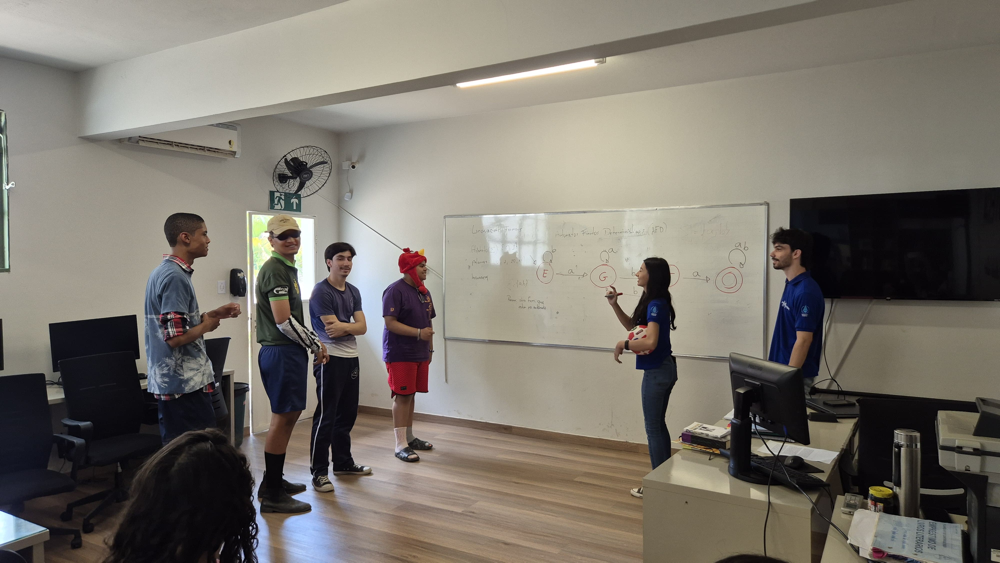
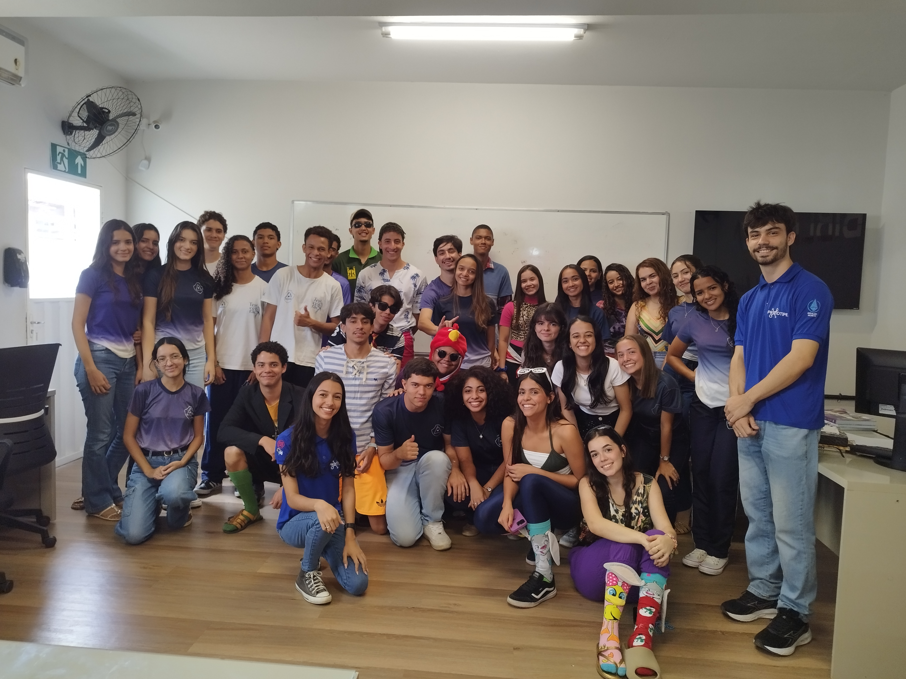

Desmistificando a Computação
Popularização da Lógica e Linguagens Formais através de Jogos Educacionais para Estudantes da Rede Pública
Unindo o rigor analítico da universidade à realidade da educação básica, nosso projeto traduz conceitos fundamentais da teoria da computação através de abordagens lúdicas e ativas. Proporcionamos a jovens da rede pública a descoberta das engrenagens invisíveis do pensamento algorítmico sem a barreira de jargões excludentes.
Pensamento Formal
Lógica acessível e aplicada
Pedagogia Lúdica
Dinâmicas de aprendizagem
Registros e Galeria do Projeto
Registros das oficinas práticas nas escolas públicas, interações com jogos e momentos com a comunidade acadêmica.

Turma Reunida para Projeto
Foi utilizada a biblioteca da escola para realização das atividades.

Introdução à LFA
Aula expositiva sobre Expressões Regulares e Autômatos Finitos Determinísticos.

Dinâmica Funcionamento AFD
Estudantes participam de dinâmica atuando como o autômato.

Dinâmica Entre Equipes
Equipes colocam em prática os conhecimentos adquiridos.

Alunos Modelando Autômato
Equipes colocam em prática os conhecimentos adquiridos.

Encerramento e Foto com Turma
Equipe do Projeto
Tadeu Knewitz Zubaran
Professor CoordenadorCoordenação geral, alinhamento pedagógico e interlocução institucional.
João Victor Rodrigues
DiscenteRedação da apostila, realização das oficinas presenciais em escolas.
Kaylane Almeida Lelis
DiscenteRedação da apostila, realização das oficinas presenciais em escolas.
Pedro Bazzarella Pereira
DiscenteProdução de vídeo-aulas, desenvolvimento do simulador web.
O que é LFA?
Linguagens Formais e Autômatos (LFA) podem soar abstratos, mas representam a base da tomada de decisão. Um Autômato Finito Determinístico (AFD) funciona como as regras de um jogo de tabuleiro ou as decisões de um personagem em um labirinto:
- check_circle Estados (Círculos): Onde o jogador ou sistema se encontra no momento.
- check_circle Transições (Setas): Ações ou escolhas do usuário que mudam a situação.
- check_circle Estado de Aceitação (Anel Duplo): A vitória, conclusão da regra ou objetivo alcançado.
Exemplo ilustrado ao lado: autômato que aceita sequências lógicas contendo a subsequência '10' (inicia em q0, processa e valida em q2).
Materiais Produzidos
Materiais de apoio criados além das atividades realizadas com os alunos de Ensino Médio.

Apostila de Linguagens Formais e Autômatos
Material didático abordando os temas de Nível Superior de Linguagens Formais e Autômatos, contendo a contextualização do conteúdo, exercícios de fixação e exemplos.
Playlist de Vídeos Educacionais
Vídeos educacionais curtos abordando os tópicos da apostila, complementando o conteúdo de Linguagens Formais e Autômatos apresentado e tratando exemplos de forma visual.
Jogo de Navegador: Criação de Autômatos
Jogo interativo desenvolvido pelo projeto. Os estudantes resolvem desafios gerados proceduralmente, criando autômatos que atendem as demandas de cada questão.
Avaliação e Resultados Obtidos
Espaço reservado para foto do formulário de avaliação preenchido pelos estudantes.
Assimilação Lógica
Compreensão de regras formais e estados de aceitação comprovada nos questionários pós-oficina.
Alunos Participantes
Estudantes do ensino fundamental II e médio atendidos em escolas públicas estaduais.
Índice de Satisfação
Avaliação geral dos estudantes quanto ao engajamento com as dinâmicas e o jogo web.
Interesse Escolar
Das diretorias e coordenações pedagógicas consultadas solicitaram continuidade do projeto.
insights Síntese Qualitativa dos Formulários
Os relatos qualitativos evidenciam a desmistificação do "medo da matemática e computação". Mais de 70% dos alunos relataram enxergar pela primeira vez a relação direta entre o aprendizado de regras lógicas na escola e o funcionamento dos jogos e tecnologias digitais que consomem em seu dia a dia.